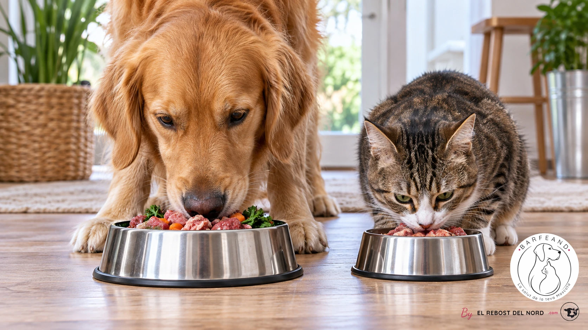

Des ingrédients identifiables
Les recettes BARFEAND sont composées de viande, d’os charnus, d’abats, de légumes et de fruits.
BARFEAND · by El Rebost del Nord
Notre savoir-faire de boucher, dans chaque gamelle.
Nous sommes la marque d’alimentation BARF de El Rebost del Nord. Nous préparons en Andorre des recettes pour chiens et chats, avec des ingrédients identifiables et des informations claires sur chaque paquet.

Nos origines
BARFEAND est liée à El Rebost del Nord. Notre travail de la viande et des préparations bouchères nous a conduits à créer une gamme d’alimentation crue pour chiens et chats, préparée en Andorre.
Nous voulons que chacun puisse savoir facilement ce que contient chaque ration. C’est pourquoi nous identifions les recettes, détaillons les ingrédients et indiquons le lot et la date limite de consommation sur l’emballage.
Découvrez nos recettesNotre façon de travailler
Nous présentons chaque produit avec des informations précises pour vous aider à choisir la gamme et le format qui vous conviennent.
Les recettes BARFEAND sont composées de viande, d’os charnus, d’abats, de légumes et de fruits.
Des recettes monoprotéine à partir d’une seule espèce animale, et une recette multiprotéines associant poulet, veau et porc.
Des formats de 500 g et de 1 kg, avec le lot, la date limite de consommation et les consignes de conservation à −18 °C.
Formation
Le parcours de formation de Roser Borras Corral comprend trois diplômes d’éducation et d’éthologie canines et une inscription à un programme de nutrition et d’alimentation canine et féline.
Inscription au programme « Experto Universitario en Nutrición y Alimentación de Caninos y Felinos » de TECH Universidad Tecnológica.
Cours théorique et pratique de Bon Gos – Etologia i Educació Canina, dispensé les 6, 7 et 8 novembre 2009.
Diplôme de la Reial Societat Canina de Catalunya, délivré à Barcelone le 20 avril 2009.
Diplôme de la Reial Societat Canina de Catalunya, délivré à Barcelone le 17 septembre 2009.
Et maintenant ?